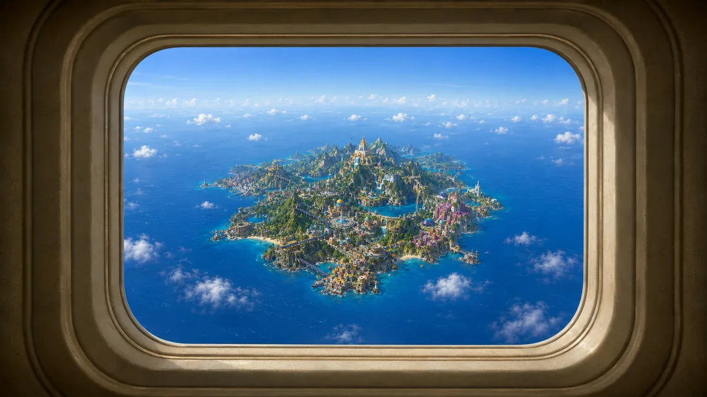

An island no real map agrees on
Somewhere past the last charted reef, on a flight nobody can quite retrace — the island shows up out the window like it was waiting for you.

Solmara sits somewhere in the Caribbean, and no two maps put it in the same place. Colonial stone runs straight into elaborate neon signage. The toll of a cathedral bell competes with reggaetón three blocks over. String lights have hung across the same plaza since before anyone can remember. It was built out of everywhere its people came from, which is most of the pan-Hispanic world at once.
Every character has something to teach you, each with different personalities, backstories, and interests. Say the wrong thing,
or the right one, the conversations remain enjoyable and engaging.
Prepare for an exciting evening
The evening starts in your apartment on Solmara. Your new friends Carmen and Cayetana will teach you some new words to help in conversations before you hit the town.
Meet new faces and hit it off
Approach a number of interesting NPCs and begin to talk with them. Translate their sentences and your responses through fun, fast-paced minigames. Before you've realized, you know how to speak Spanish.
Take home new words, phrases, and memories
Collect the golden words and phrases that appear throughout the night to use in future conversations to unlock more missions, places, and prizes !
The Scene is a gateway to countless stories, where language becomes the key to becoming who you want to be, anywhere.
The anthologyThe Scene is a language-learning anthology where players step into the lives of the characters they create across unique worlds. Each Realm tells its own story, inspired by a different language and culture. Learn through conversation, build relationships, and experience life from an entirely new perspective.
The Scene is a collection of connected realms where language becomes a life to experience rather than a subject to study. By entering a Realm, players create a character and immerse themselves into a living world shaped by its own culture, people, and language. Every Realm offers a complete and independent story and our first one takes place on the fictional Caribbean island of Solmara. As time goes on more languages will be added to The Scene and they will each have their own Realm. Together, they form The Scene: an archive of lives, memories, and conversations waiting to be explored.
What's coming
- More of the island to walk around, and more people in it worth talking to.
- An art and sound pass. What you see above is placeholder.
- Playable on mobile, eventually. For now this wants a real keyboard.
First playable build on the web. The apartment, the local social house, conversations that remember what you told people, and words you can take out of a sentence and keep.